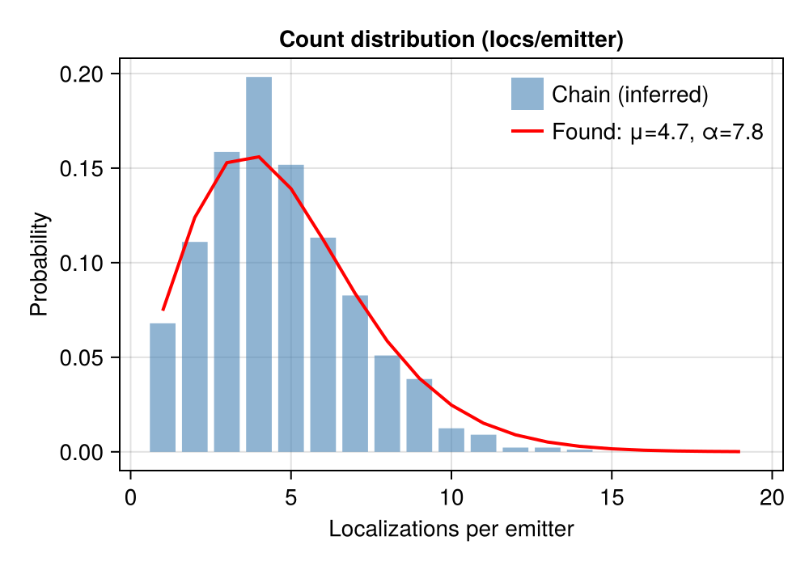
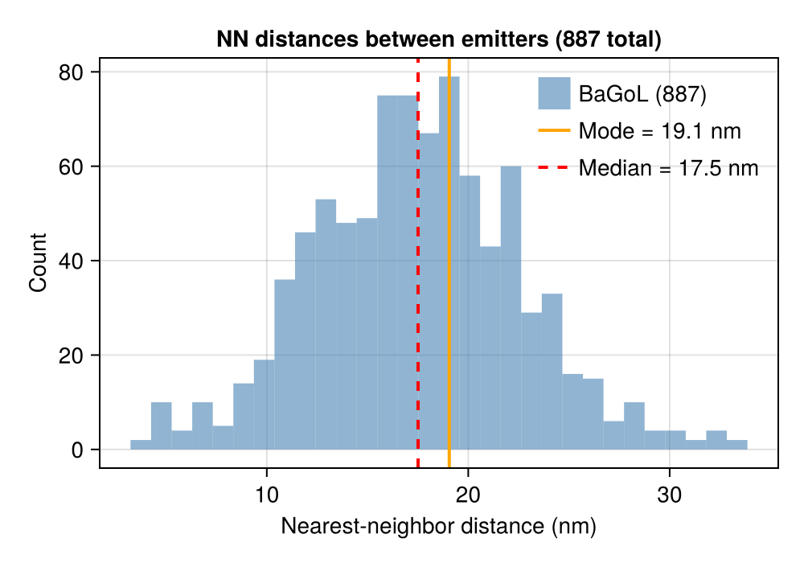
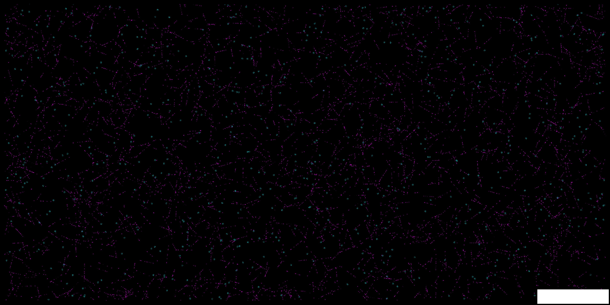
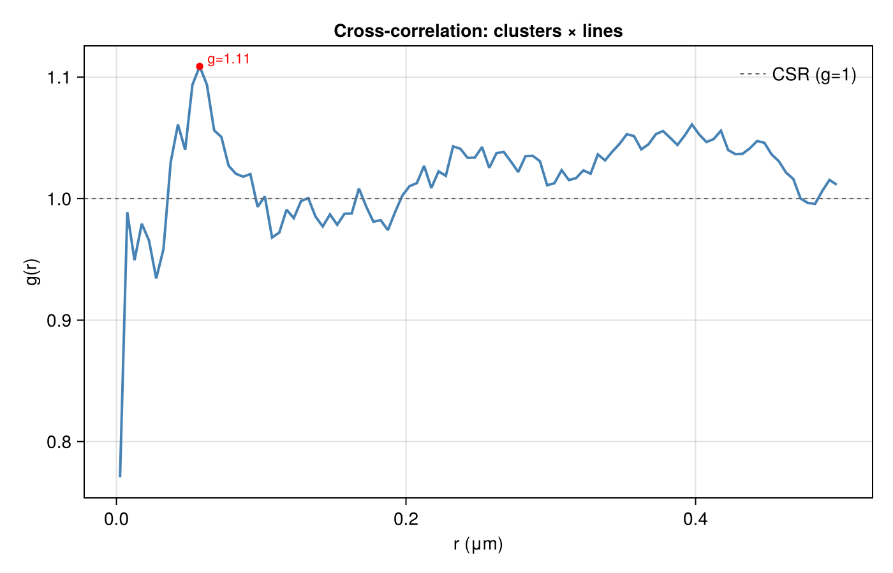

Tutorial
This walkthrough runs a complete SMLM analysis pipeline on simulated data, showing the output at every step. All figures are generated from the scripts in examples/ — the core walkthrough uses analysis_example.jl and stepwise_example.jl; the Bayesian Grouping (BaGoL) and Multi-Target (Multi-Color) sections below use bagol_example.jl and multicolor_example.jl.
Setup
using SMLMAnalysis
using MicroscopePSFs
# Camera: 256x128 pixels @ 100nm
camera = IdealCamera(256, 128, 0.1)
# Simulate: 4 datasets x 2000 frames, 8-mer pattern
sim_params = StaticSMLMConfig(density=2.0, σ_psf=0.13, nframes=2000, ndatasets=4)
pattern = Nmer2D(n=8, d=0.05)
fluor = GenericFluor(photons=50000.0, k_off=20.0, k_on=0.02)
(_, sim_info) = simulate(sim_params; pattern=pattern, molecule=fluor, camera=camera)Image generation uses gen_images from SMLMSim with a Gaussian PSF model. See the example scripts for the full setup including the per-dataset image generation workaround.
AnalysisConfig Approach
The primary interface uses AnalysisConfig to define a complete pipeline:
config = AnalysisConfig(
camera = camera,
steps = [
DetectFitConfig(
boxer=BoxerConfig(boxsize=7, psf_sigma=0.13),
fitter=GaussMLEConfig(psf_model=GaussianXYNBS(), iterations=20)),
FilterConfig(photons=(500.0, Inf), precision=(0.0, 0.007), pvalue=(1e-3, 1.0)),
FrameConnectConfig(max_frame_gap=5, calibration=CalibrationConfig(clamp_k_to_one=true)),
DriftConfig(degree=2),
DensityFilterConfig(n_sigma=2.0),
RenderConfig(zoom=20, colormap=:inferno),
],
outdir = "output/",
verbose = Verbosity.STANDARD
)
# image_stacks is Vector{Array}: 4 datasets, each (height, width, 2000)
(result, info) = analyze(image_stacks, config)The analyze function returns (AnalysisResult, AnalysisInfo) following the JuliaSMLM tuple-pattern. Each step produces diagnostic outputs in the output directory.
Step 1: Detection + Fitting
DetectFitConfig combines ROI detection (SMLMBoxer) and MLE fitting (GaussMLE) into a single step. For multi-dataset data (Vector{Array}), each dataset is processed independently.
DetectFitConfig(
boxer = BoxerConfig(boxsize=7, min_photons=500.0, psf_sigma=0.13),
fitter = GaussMLEConfig(psf_model=GaussianXYNBS(), iterations=20),
)Dataset boundaries come from the data structure: Vector{Array} of length 4 = 4 datasets.
Detection overlay
Shows detected ROIs overlaid on raw camera frames. Yellow boxes mark each candidate molecule:

Fit quality distributions
Generated by the filter step: histograms of photons, background, localization precision, p-value, and PSF width from the raw (pre-filter) data. Gray regions show what will be rejected by the filter thresholds:

Step 2: Filtering
FilterConfig applies quality-based filtering. All criteria use (min, max) tuples:
FilterConfig(
photons = (500.0, Inf), # Minimum 500 photons
precision = (0.0, 0.007), # Maximum 7nm precision
pvalue = (1e-3, 1.0), # Goodness-of-fit threshold
psf_sigma = :auto # Optional: mode +/- 10%
)The acceptance rate (typically 60-90% for well-optimized detection) is reported in the step summary.
Step 3: Frame Connection (with uncertainty calibration)
FrameConnectConfig links localizations of the same emitter across consecutive frames. Uncertainty calibration is integrated as a sub-config via the calibration field — when set, the linked tracks are used to fit the CRLB-vs-observed-variance model before the per-track combine step (link → calibrate → combine).
FrameConnectConfig(
max_frame_gap = 5, # Allow gaps of up to 5 dark frames
max_sigma_dist = 5.0, # Spatial matching threshold
calibration = CalibrationConfig(clamp_k_to_one=true), # k >= 1 (CRLB is theoretical lower bound)
)The calibration fits observed_variance = A + B * CRLB_variance, giving sigma_motion = sqrt(A) (extra motion/jitter variance) and k = sqrt(B) (CRLB scale factor). After calibration, each emitter's uncertainty is corrected to sqrt(sigma_motion^2 + k^2 * sigma_CRLB^2) and tracks are recombined with weighted averaging using corrected uncertainties.
Calibration results are available on the returned info:
(smld, fc_info) = analyze(smld, FrameConnectConfig(max_frame_gap=5,
calibration=CalibrationConfig(clamp_k_to_one=true)))
cal = fc_info.info.calibration # FrameConnectInfo.calibration::CalibrationResult
cal.k_scale # k
cal.sigma_motion_nm # sqrt(A) in nm
cal.mean_chi2 # ~2.0 means well-calibratedTrack size distribution
Shows the number of localizations per track. The mean track length reflects blinking kinetics (k_off):

Drift jitter
Frame-to-frame position shifts estimated from linked emitters. Shows both instantaneous jitter and cumulative drift across all datasets:

Uncertainty calibration
Compares reported variance (CRLB) against observed variance from frame-to-frame scatter. The fit gives A (motion variance in nm^2) and B (CRLB scale factor):

Step 4: Drift Correction
DriftConfig corrects sample drift using entropy-based optimization from SMLMDriftCorrection.
DriftConfig(
degree = 2, # Polynomial degree
dataset_mode = :registered, # Registered mode (multi-dataset)
quality = :singlepass # :singlepass or :iterative
)Drift trajectory
Shows the estimated X and Y drift over time and the XY path. For multi-dataset data, each dataset's trajectory is shown in a different color:

For details on continuous vs registered modes and chunking strategies, see Drift Correction.
Step 5: Density Filter
DensityFilterConfig removes isolated localizations that lack neighbors, which are likely false detections.
DensityFilterConfig(
n_sigma = 2.0, # Search radius in sigma units
min_neighbors = :auto # Auto-detect threshold via valley method
)Neighbor histogram
The valley between the isolated peak (low neighbors) and the clustered peak (high neighbors) determines the threshold:

Step 6: Render
RenderConfig generates super-resolution images using SMLMRender. Multiple renders can be added as separate pipeline steps.
# Gaussian blur rendering (publication quality)
RenderConfig(zoom=20, colormap=:inferno)
# Histogram binning colored by time
RenderConfig(strategy=HistogramRender(), zoom=10, colormap=:turbo, color_by=:absolute_frame, clip_percentile=nothing)
# Circle rendering colored by time
RenderConfig(strategy=CircleRender(), zoom=50, colormap=:turbo, color_by=:absolute_frame)Gaussian render

Histogram render

Circle render

Step-by-Step Workflow
The analyze() dispatch enables iterative parameter tuning:
# Run detection + fitting (expensive step)
(smld, df_info) = analyze(image_stacks, DetectFitConfig(
camera=camera, boxer=BoxerConfig(boxsize=7, psf_sigma=0.13));
outdir="output/", step_number=1, verbose=Verbosity.STANDARD)
# Save for later resume
save_smld("output/after_detectfit.h5", smld)
# Try filter parameters
(smld_filtered, _) = analyze(smld, FilterConfig(photons=(500.0, Inf));
outdir="output/", step_number=2, verbose=Verbosity.STANDARD)
# Not happy? Try looser filter on same smld (no re-detection needed)
(smld_filtered, _) = analyze(smld, FilterConfig(photons=(300.0, Inf)))
# Continue pipeline (calibration is a sub-config of FrameConnectConfig)
(smld_fc, fc_info) = analyze(smld_filtered, FrameConnectConfig(max_frame_gap=5,
calibration=CalibrationConfig(clamp_k_to_one=true)))
cal = fc_info.info.calibration # CalibrationResult
(smld_dc, dc_info) = analyze(smld_fc, DriftConfig(degree=2))
(smld_dc, _) = analyze(smld_dc, RenderConfig(zoom=20, colormap=:inferno)) # pass-through; writes image to outdir
(img, _) = render(smld_dc, RenderConfig(zoom=20, colormap=:inferno)) # in-memory image array
# Resume from saved checkpoint in new session
smld = load_smld("output/after_detectfit.h5")
(smld, _) = analyze(smld, FilterConfig(photons=(400.0, Inf)))Output Directory Structure
When outdir is set, each step writes to a numbered subdirectory:
output/
├── 01_detectfit/
│ ├── config.toml
│ ├── info.toml
│ ├── stats.md
│ └── detection_overlay.png
├── 02_filter/
│ ├── config.toml
│ ├── stats.md
│ ├── fit_quality.png
│ └── fit_overlay.png
├── 03_frameconnect/
│ ├── config.toml
│ ├── info.toml
│ ├── stats.md
│ ├── track_histogram.png
│ ├── drift_jitter.png
│ ├── shift_histogram.png
│ └── uncertainty_calibration.png # when calibration=CalibrationConfig()
├── 04_driftcorrect/
│ ├── config.toml
│ ├── info.toml
│ ├── stats.md
│ └── drift_trajectory.png
├── 05_densityfilter/
│ ├── config.toml
│ ├── info.toml
│ ├── stats.md
│ └── neighbor_histogram.png
├── 06_render/
│ ├── config.toml
│ ├── info.toml
│ └── gaussianrender_inferno_20x.png
└── summary.mdBayesian Grouping (BaGoL)
When each emitter blinks or rebinds many times — as in DNA-PAINT, or dSTORM with long acquisitions — every binding site produces a cloud of localizations. BaGoL (Bayesian Grouping of Localizations) groups that cloud into a single high-precision emitter using reversible-jump MCMC. It runs after frame connection (and any filtering), before the final render.
The examples/bagol_example.jl script simulates a DNA-PAINT hexamer — 6 binding sites on a 40 nm circle — producing ~10 localizations per site over 4000 frames. The BaGoL step is a single analyze() call whose fields pass straight through to SMLMBaGoL.run_bagol:
(smld_bagol, step_info) = analyze(smld, BaGoLConfig(
μ = 10.0, # Expected localizations per binding site
shape = 2.0, # NegBin shape (1 = dSTORM, >1 = DNA-PAINT)
learn_distribution = true, # Let the MCMC refine μ and shape
n_iterations = 10000,
burn_in = 2000,
partition_sigma = 3.0, # DBSCAN pre-partition threshold (σ units)
posterior_pixel_size = 0.002, # 2 nm posterior image (0.0 to disable)
))
bagol = step_info.info
bagol.n_emitters # number of grouped emitters (MAP-N)
bagol.compression # localizations-to-emitters ratio
bagol.final_μ # refined mean localizations per emitterBaGoL is state-modifying: smld_bagol replaces smld for any downstream render. Its diagnostics are written to the step folder (08_bagol/) — the 2 nm posterior image, partition circles, the localization-vs-MAP-N overlay, and MCMC acceptance rates — using SMLMBaGoL's own report system rather than inline rendering.
Count distribution
The grouping fits a negative-binomial model to the number of localizations per emitter. The recovered μ and shape α summarize the blinking/rebinding kinetics:

Nearest-neighbor distances
After grouping, the distances between neighboring MAP-N emitters recover the underlying geometry — here the ~19 nm edge spacing of the simulated hexamer:

Super-resolution rendering of the grouped emitters is done with a subsequent RenderConfig step (precision-weighted Gaussian). For the full field reference — partitioning, the count model, learned vs. fixed distributions — see Bayesian Grouping (BaGoL).
Multi-Target (Multi-Color)
To analyze multiple color channels and overlay them, run each channel through its own AnalysisConfig, then tie them together with a MultiTargetConfig. The multi-target steps (composite render, cross-alignment, cross-correlation) dispatch on the resulting Vector{BasicSMLD}.
examples/multicolor_example.jl analyzes two channels — Nmer2D clusters and Line2D filaments — each with a full DetectFit → Filter → FrameConnect → Drift → Render pipeline, then composites them:
mt = MultiTargetConfig(
labels = [:clusters, :lines],
colors = [:cyan, :magenta], # default for 2 channels
steps = [
CompositeRenderConfig(zoom=20.0, strategy=GaussianRender()),
CrossCorrConfig(r_max=0.5, dr=0.005),
],
outdir = "output/multicolor/",
)
(result, info) = analyze([
(image_stacks_clusters, config_clusters),
(image_stacks_lines, config_lines),
], mt)
result[:clusters].smld # per-channel SMLD
result.smlds # Vector{BasicSMLD} (all channels, possibly aligned)
info.channels[:clusters] # per-channel AnalysisInfoComposite render
CompositeRenderConfig renders each channel in its assigned color and overlays them — cyan clusters over magenta filaments:

Cross-correlation
CrossCorrConfig computes the pair cross-correlation g(r) between two channels. A peak above the complete-spatial-randomness baseline (g = 1) at short range indicates co-localization:

For per-channel output layout, cross-alignment, and the full step reference, see Multi-Channel Analysis.